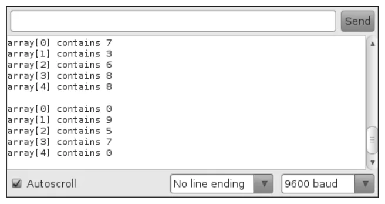

An array is a set of variables or values grouped together so that they can be referenced as a whole. When dealing with lots of related data, you’ll find it a good idea to use arrays to keep your data organized.
Defining an Array
Each item in an array is called an element. For example, suppose six float variables contain temperatures taken over the last six hours; instead of giving them all separate names, we can define an array called temperatures with six elements like this:
float temperatures[6];We can also insert values when defining the array. When we do that, we don’t need to define the array size. Here’s an example:
float temperatures[]={11.1, 12.2, 13.3, 14.4, 15.5, 16.6};Notice that this time we didn’t explicitly define the size of the array within the square brackets ([]); instead, its size is deduced based on the number of elements set by the values inside the curly brackets ({}).
Referring to Values in an Array
We count the elements in an array beginning from the left and starting from 0; the temperatures[] array has elements numbered 0 to 5. We can refer to individual values within an array by inserting the number of the element in the square brackets. For example, to change the first element in temperatures[] (currently 16.6) to 12.34, we would use this:
temperatures[0] = 12.34;Writing to and Reading from Arrays
In Listing 6-3, we demonstrate writing values to and reading values from an array of five elements. The first for loop in the sketch writes a random number into each of the array’s elements, and the second for loop retrieves the elements and displays them in the Serial Monitor.
// Listing 6-3
void setup()
{
Serial.begin(9600);
randomSeed(analogRead(0));
}
int array[5]; // define our array of five integer elements
void loop()
{
int i;
Serial.println();
for ( i = 0 ; i < 5 ; i++ ) // write to the array
{
array[i] = random(10); // random numbers from 0 to 9
}
for ( i = 0 ; i < 5 ; i++ ) // display the contents of the array
{
Serial.print("array[");
Serial.print(i);
Serial.print("] contains ");
Serial.println(array[i]);
}
delay(5000);
}Figure 6-8 shows the output of this sketch in the Serial Monitor.

Now that you know how to work with binary numbers, shift registers, and arrays, it’s time you put that knowledge to work. In the next section, we’ll wire up some digital number displays.